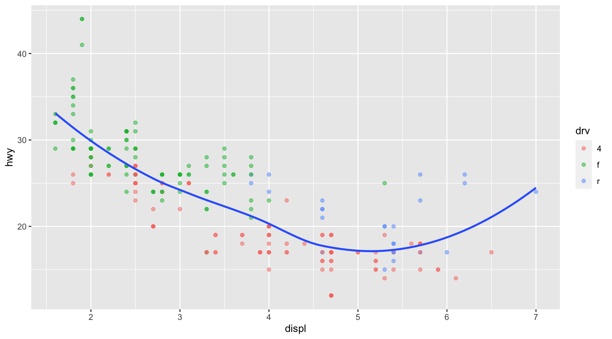

ggplot(data = mpg,
mapping = aes(x = displ, y = hwy)) +
geom_point(alpha = .3) +
geom_smooth(se = F)Lecture 14 - Note
Facets; Data Visualization Process; Geometric Objects
1 Classwork 7
1.1 Question 1c
1.1.1 (a)
1.1.2 (b)
We need to use drv variable, which has three values:
mpg <- ggplot2::mpg
unique(mpg$drv) # giving the unique values in drv variable in mpg data.frame[1] "f" "4" "r"ggplot(data = mpg,
mapping = aes(x = displ, y = hwy)) +
geom_point(alpha = .3) +
geom_smooth(se = F,
mapping = aes(group = drv))1.1.3 (c)
ggplot(data = mpg,
mapping = aes(x = displ, y = hwy,
color = drv)) +
geom_point(alpha = .5) +
geom_smooth(se = F)1.1.4 (d)
ggplot(data = mpg,
mapping = aes(x = displ, y = hwy)) +
geom_point(mapping = aes(color = drv),
alpha = .5) +
geom_smooth(se = F)
1.1.5 (e)
ggplot(data = mpg,
mapping = aes(x = displ, y = hwy)) +
geom_point(mapping = aes(color = drv),
alpha = .5) +
geom_smooth(mapping = aes(linetype = drv),
se = F)An order of geoms matters!
ggplot(data = mpg,
mapping = aes(x = displ, y = hwy)) +
geom_smooth(mapping = aes(linetype = drv),
se = F) +
geom_point(mapping = aes(color = drv),
alpha = .5,
size = 10) ggplot( mpg,
aes(x = displ, y = hwy)) +
geom_point(color = "white",
size = 5) +
geom_point(aes(color = drv),
alpha = .5)1.2 Question 1d
organdata_simple <- read_csv('https://bcdanl.github.io/data/organdata_simple.csv')ggplot(data = organdata_simple,
aes(x = year,
y = donors)) +
geom_line(aes(color = country)) +
geom_point()- time trend of the distribution of a continuous varialbe
ggplot(data = organdata_simple,
aes(x = factor(year),
y = donors)) +
geom_boxplot() ggplot(data = organdata_simple,
aes(x = year,
y = donors)) +
geom_line() +
geom_point() +
facet_wrap(country ~ .)2 Statistical Transformation
ggplot(diamonds,
aes(x = cut)) +
geom_bar()
# to make a simple data.frame
demo <- tribble(
~cut, ~freq,
"Fair", 1610,
"Good", 4906,
"Very Good", 12082,
"Premium", 13791,
"Ideal", 21551 )
ggplot(data = demo,
aes(x = cut)) +
geom_bar()ggplot(data = demo) +
geom_bar(mapping =
aes(x = cut,
y = freq),
stat = "identity")diamonds <- diamonds
ggplot(diamonds,
aes(x = cut, fill = cut)) +
geom_bar()ggplot(diamonds,
aes(x = cut, fill = clarity)) +
geom_bar()